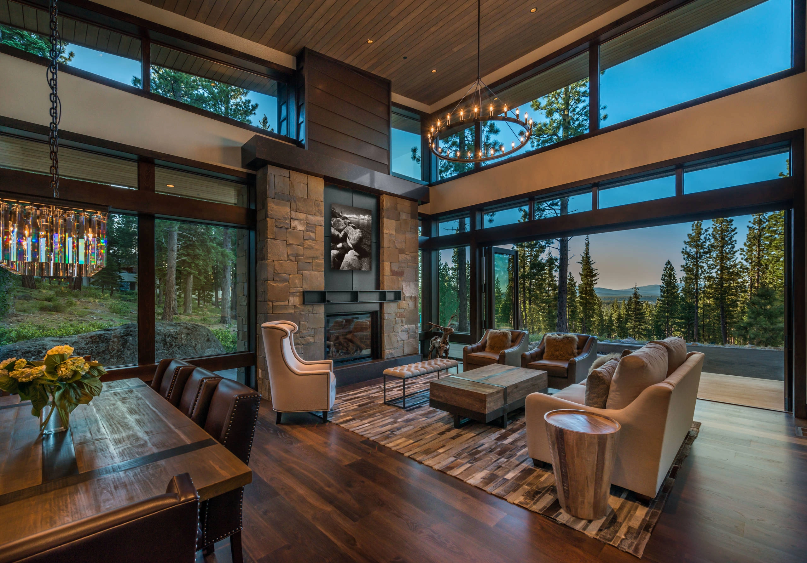
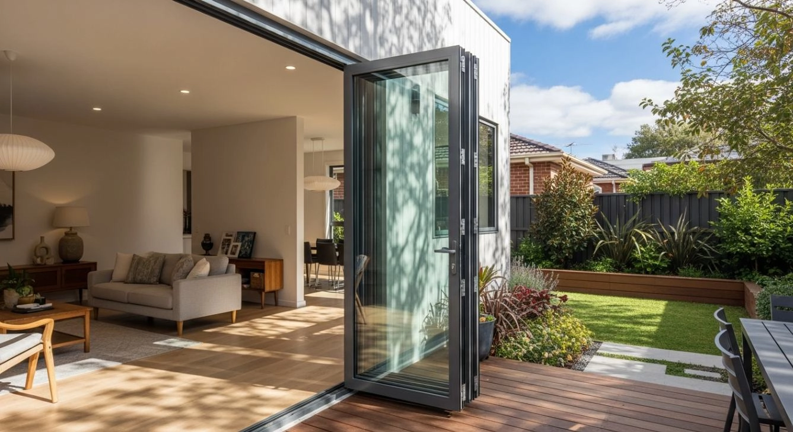
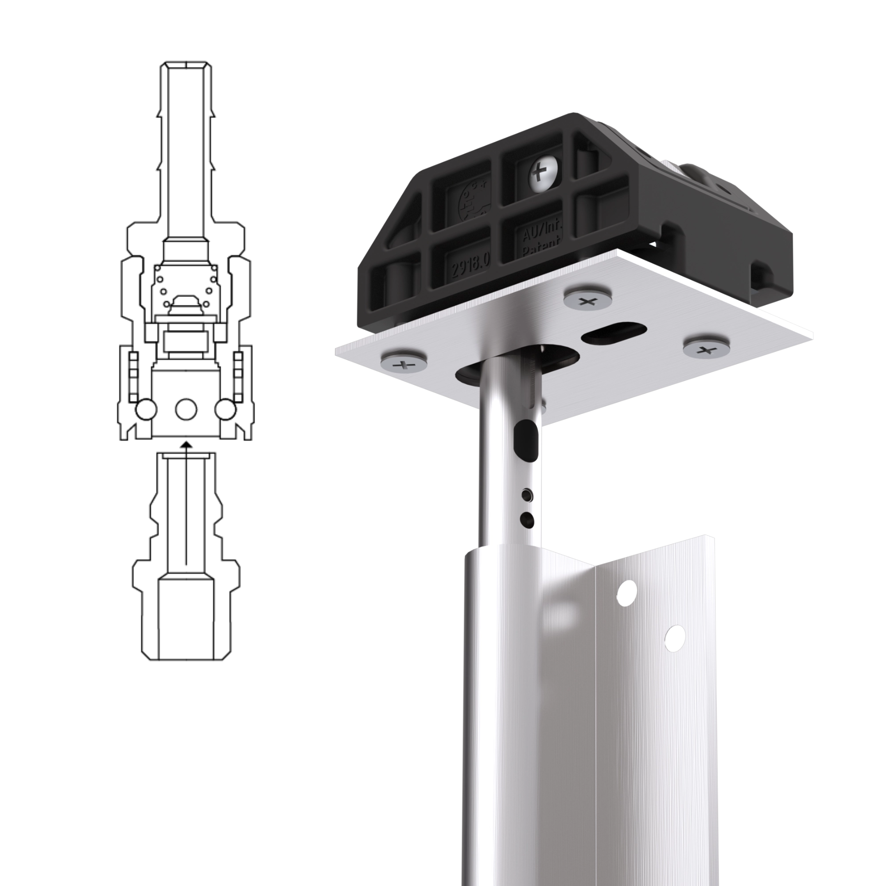
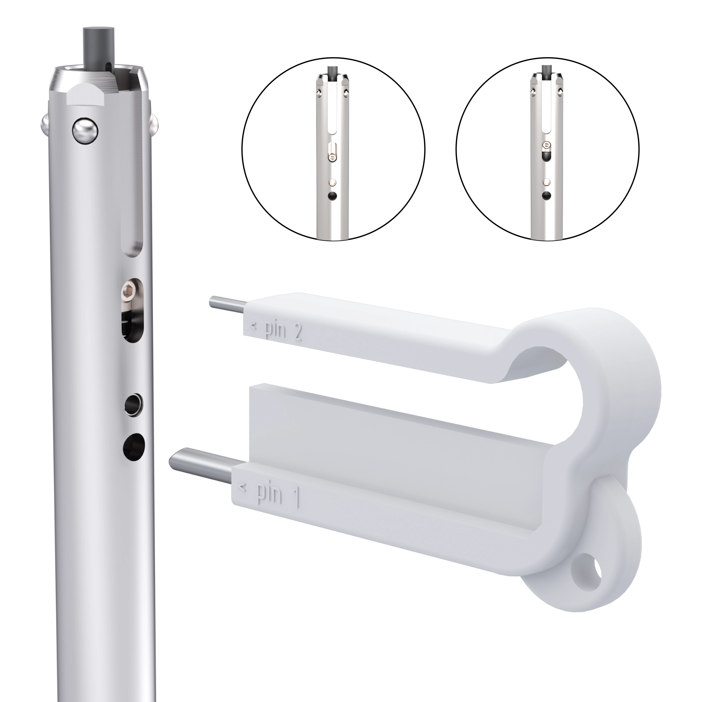

TITAN is bold architectural hardware for architects, designers and homeowners who believe a door should do more than open. It should change the way a space feels. It should invite light in, remove barriers, connect rooms, frame views and move with a confidence you feel the first time your hand touches it.


TITAN is top hung because clean floor lines matter. The weight, the strength and the serious work are lifted above and concealed into the fabric of the building.
The result is a floor that feels calm and uninterrupted. The threshold becomes lighter. The transition between inside and outside feels more natural.
TITAN does not put bulky hardware where your eye wants simplicity. It hides the muscle, and leaves the architecture in control.
TITAN does not believe the future is simply putting motors on everything. Automation has its place. But in the right architectural system, true luxury is not waiting for a motor to decide how the door should move.
True luxury is placing your hand on the panel and feeling it respond.
Smooth. Balanced. Quiet. Immediate.
TITAN is grounded in single touch operation: movement so refined that using the door feels natural, not mechanical.

TITAN has a simple design rule: if it does not improve the architecture, the movement or the experience, it does not belong.
No visual clutter. No unnecessary interruption. No awkward hardware fighting the space.
The best design is not empty. It is disciplined.
Like the closing of a luxury car door, or the smooth pull of a precision drawer, some things speak through touch.
TITAN was created for that moment. The moment a homeowner opens the door and immediately understands that something is different.
Bold By Nature
TITAN is not timid hardware. It was created for ambitious openings, strong architectural ideas and spaces with presence.
Quiet By Design
The system hides what should be hidden, simplifies what should feel simple, and allows the building to take the credit.
Effortless By Intent
TITAN is designed around the person using it. The movement should feel intuitive, immediate and controlled from the first touch.
TITAN is not a product added at the end of a project. It is a design decision.
It affects how people gather, how light moves, how rooms open, and how the boundary between inside and outside disappears.
This is why TITAN belongs in conversations with architects and designers early — because motion is not decoration. Motion shapes the experience.
TITAN is passionate, precise and unapologetically architectural.
It is for people who care about clean lines. Who understand that strength does not need to look bulky. Who believe the best technology should disappear into the experience.
TITAN does not just open a wall. It changes how the space feels.

With hidden fixings, TITAN Bifolds create seamless views, ideal for large glass panels in any setting. Inspired by pneumatic couplers, they ensure strong performance and easy, secure installation.

Carriage geometry, track profile and adjustment points were developed as a single system, not as isolated components. The result is a hardware package that can accept building movement and fabrication variance without losing control of the slide.
How TITAN Doorware Integrates
TITAN Doorware integrates seamlessly with the T100 Bifolds, offering a perfect match of hardware and folding door system engineered for reliable, long-lasting performance. The compatibility of TITAN components ensures smooth operation and precise alignment, whether the panels are aluminium or timber. With a focus on quality and durability, TITAN Doorware enhances the overall function and security of the T100 Bifolds, allowing these systems to meet the diverse needs of both residential and commercial projects while maintaining a cohesive and stylish look.
Engineered Strength
TITAN products are built for robust performance, using precision engineering to support demanding architectural requirements.
Premium Materials
Each TITAN component is crafted from high-quality, corrosion-resistant materials, ensuring reliable operation and long-lasting durability.
Modern Design
With sleek aesthetics and minimalist profiles, TITAN hardware complements contemporary spaces while maximizing functionality.
Trusted by Professionals
Chosen by architects and builders, TITAN delivers consistent quality and dependable support for a wide range of projects.
The Innovation Behind TITAN Sliders
See how TITAN Sliders inspire stunning spaces with their blend of modern design and lasting performance. Explore how our systems have elevated real-world projects.
View Our Design Inspirations